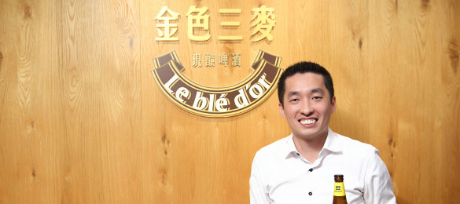
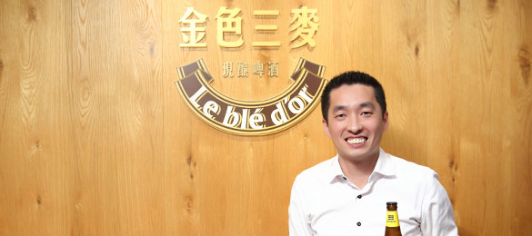

知名的啤酒餐飲連鎖品牌，14年來持續運用數位科技輔助營運，打造出有異國風情、食客盡歡的餐飲空間。今年起透過與遠傳合作導入的LINE@生活圈、雲端禮物卡等數位新工具，透過行動服務加深分店在地經營連結，期待拓展新客源。
提起《金色三麥》的印象，口味眾多的自釀啤酒，常是消費者的第一印象。事實上，這家連鎖餐廳擁有台灣第一張民間釀酒許可執照，在新北市三重區自設釀酒廠。該店招牌的大麥和蜂蜜啤酒，多次在國際啤酒大賽奪牌，而特定季節精釀的果香風味啤酒，亦廣受年輕族群歡迎。
2004年，金色三麥為了確保啤酒的穩定銷售通路，開設首家餐飲空間。14年來秉持「只直營、不加盟」的經營策略，全台展店達12家，發展為食客心中具有異國風情，又能放鬆暢飲，盡享佳餚的好場所。
面向持續展店、追求成長的發展目標，金色三麥早早就運用數位科技輔助營運。早期投入POS與ERP系統，透過點餐系統、庫存管理，從產品角度來收集與掌握顧客對餐點飲品的喜好。
中期更進一步投入設置中央食品工廠，統一採購和處理食材與半成品。除了確實掌控食材安全外，也務求提供給顧客的餐點，無論在哪個分店享用，都有共同品質。
訴求場域體驗，分店各展特色
對餐飲業者來說，如何建立顧客關係、傳達清晰有力的品牌價值，提供體驗參與的消費風格，是一道永無止境的課題。而隨著數位行銷工具不斷推陳出新，所謂「不賣商品，要賣體驗」，更為新世代的主流消費價值。
金色三麥對此亦不落人後。例如，運用SNS粉絲專頁與消費者互動；特別的是，他們讓每個分店開設自己的專頁。
「這種做法是想讓各分店經營在地客群。」資訊部協理呂景宏表示，分店會根據場地特色，規劃適合的活動。例如，曾經在世足賽期間，在某些分店架設大螢幕，設計成現場觀賽的氛圍，吸引不少球迷報到。有些分店也曾在萬聖節引進擴增實境(AR)設備，營造西洋鬼節的場景，大受顧客歡迎。
運用遠傳《LINE@生活圈》，加深消費者溝通
因為策劃的數位藍圖清晰明確，金色三麥導入數位行銷的腳步也不停歇。其中，採用遠傳電信的《LINE@生活圈》服務即為一例。
「LINE有1800萬用戶的規模，加上便利的平台與遠傳的服務，有助我們透過新式行動工具，去接觸更多潛在顧客。」呂景宏表示，金色三麥延續分店在地經營的理念，各店有獨立的LINE@官方帳號，消費者加入好友後，有特惠活動就主動通知，推播的觸及率迅速擴張。
透過遠傳導入這套《LINE@生活圈》服務，分店可發佈總部的活動通知給好友群組，也能針對個別好友(消費者)的提問，進行一對一互動。後續敬請期待金色三麥會在LINE@裡面會有新應用。
禮物卡擴展新客源，雲端扣款即時便利
另一方面，金色三麥也透過遠傳的引介，採用雲端禮物卡這類創新的支付工具。禮物卡擺脫傳統禮券必須定額使用、不找零的限制，消費者可自由指定扣款金額。
「開拓新客源是發行禮物卡的任務之一。我們鼓勵常客買禮物卡，自用之餘，還能贈送給親友。」呂景宏指出：「通常把自己喜歡的餐廳介紹給親友，只是口頭傳播。我們希望透過實質的禮物卡贈送舉動，直接促使潛在客人提高來店消費的意願。」
這種兼具行動支付與品牌貨幣的禮物卡，無論買卡與用卡只要透過門市的POS系統，就能連結發卡公司的雲端系統，即時開卡、瞬刷結帳。禮物卡的顧客資料放在遠傳的雲端機房，受到高規格的資安保護，系統穩定無虞。
打造CRM整合平台，追求體驗品質一致性
進入2018年，金色三麥的數位新課題是，要更精確掌握顧客消費流程的每個環節，特別是他們在訂位之前，透過哪些管道得知餐廳，進而想來用餐。換言之，不同線上行銷通路與訂位之間的轉換率，是急待知曉的數據。
我們正在建造數位地基，這是一套客戶關係管理的整合平台。」呂景宏談及進行中的藍圖：「我們要讓客人踏進餐廳那刻起，從帶位、點餐、廚房出餐、送餐到結帳，一切流程都數位化，有些環節還在思考做法。一旦地基打穩了，面對顧客的前端無論怎麼變換花樣，我們提供給客人的體驗品質將是穩定一致的。」
除此之外，金色三麥還自發地推動HACCP食安品質的認證。目前中央工廠和某些分店已取得認證，並預計在2018年內全數通過審查。